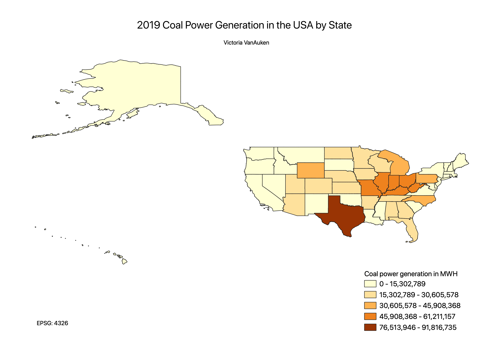

Homework 9 Choropleth
Victoria VanAuken
For this choropleth map, I originally wanted to determine the percentage of each state's power generated by wind energy to demonstrate where the most wind energy was being produced. However, I struggled to find data and decided to instead determine what states are generating the most energy using coal. I opted against a population or total generation ratio as I was most interested in which states in general burn the most coal. I am very interested in greenhouse gas emission reduction, and based on the results of my map, reduction of coal use in Texas would be impactful on total coal consumption in the United States. States on the west coast burn less coal, which makes sense due to more progressive energy policy. All in all, the map shows what I'd expect to see, though I am surprised that North Carolina generates so much power from coal.

Data used for this project
CSV dataset
XLS dataset
Link to data site
Link to shapefile